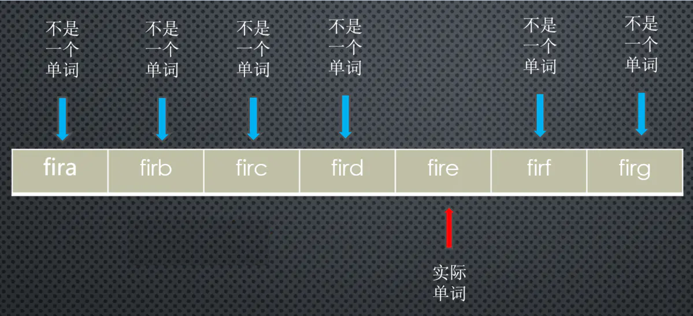
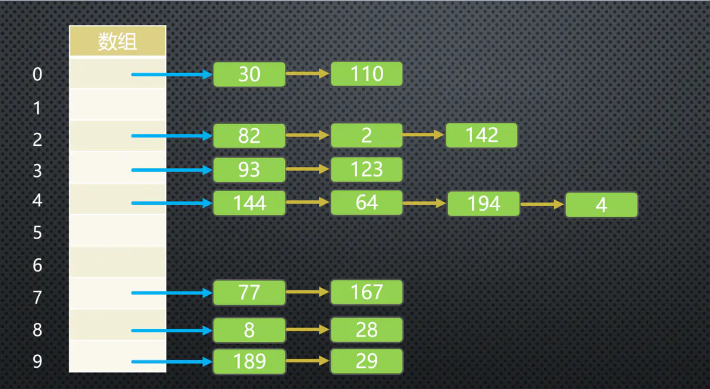
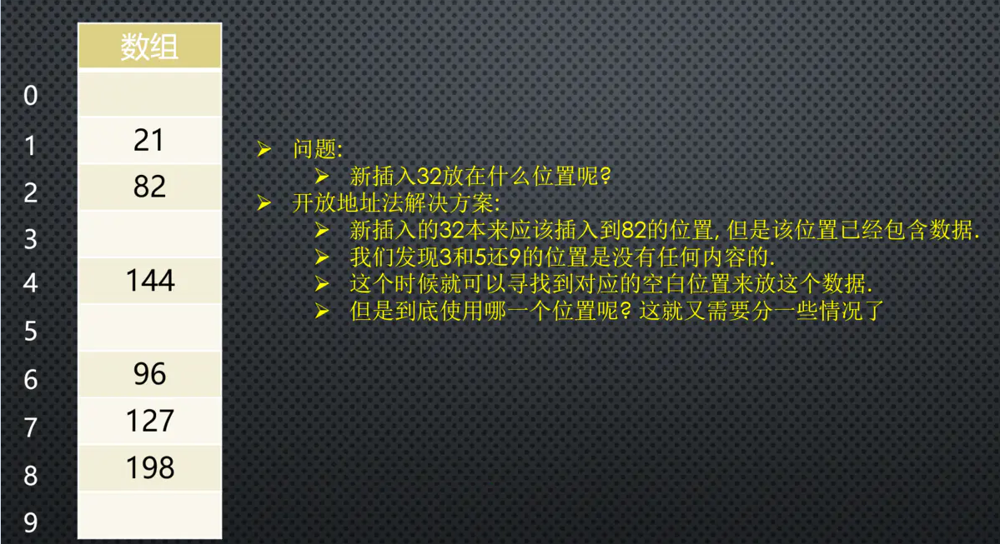
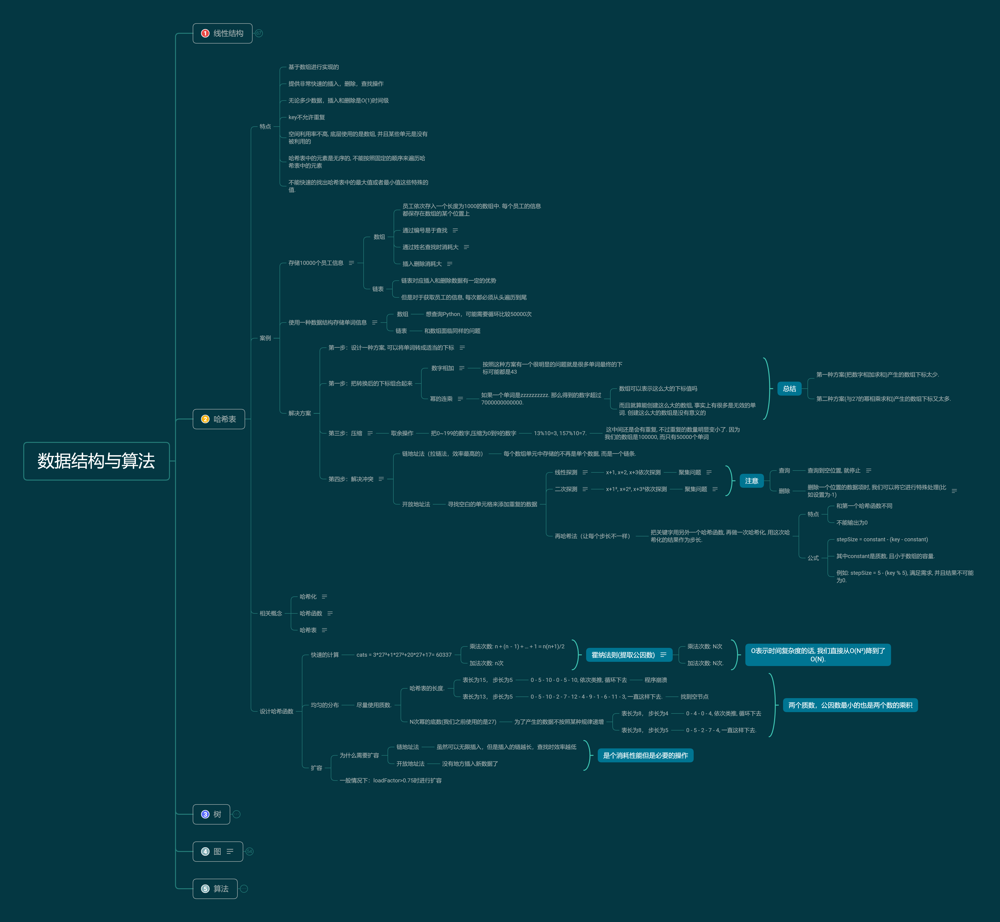

认识哈希表
哈希表特点
优点
- 哈希表通常是基于数组进行实现的, 但是相对于数组, 它也很多的优势
- 可以提供非常快速的插入-删除-查找操作
- 无论多少数据, 插入和删除值需要接近常量的时间
- 哈希表的速度比树还要快, 基本可以瞬间查找到想要的元素
- 哈希表相对于树来说编码要容易很多
缺点
- 哈希表中的数据是没有顺序的, 所以不能以一种固定的方式(比如从小到大)来遍历其中的元素
- 通常情况下, 哈希表中的key是不允许重复的, 不能放置相同的key, 用于保存不同的元素
总结特点
- 基于数组进行实现的
- 提供非常快速的插入，删除，查找操作
- 无论多少数据，插入和删除是O(1)时间级
- key不允许重复
- 空间利用率不高, 底层使用的是数组, 并且某些单元是没有被利用的
- 哈希表中的元素是无序的, 不能按照固定的顺序来遍历哈希表中的元素
- 不能快速的找出哈希表中的最大值或者最小值这些特殊的值.
它的结构就是数组, 但是它神奇的地方在于对下标值的一种变换, 这种变换我们可以称之为哈希函数, 通过哈希函数可以获取到HashCode.
案例
案例1
内容介绍：
- 假如一家公司有1000个员工, 现在我们需要将这些员工的信息使用某种数据结构来保存起来
方案一:数组
- 员工依次存入一个长度为1000的数组中. 每个员工的信息都保存在数组的某个位置上
- 通过编号易于查找(数组的特性)
- 通过姓名查找时消耗大(需要循环匹配判断是否相等)
- 插入删除消耗大(需要移动插入或删除位置后面的所有元素)
方案二:链表
- 链表对应插入和删除数据有一定的优势
- 但是对于获取员工的信息, 每次都必须从头遍历到尾
思考
- 这样看最终方案似乎就是数组了
- 假如我想查看一下张三这位员工的信息, 但是我不知道张三的员工编号, 怎么办?
- 能不能有一种办法, 让张三的名字和它的员工编号产生直接的关系呢
- 也就是通过张三这个名字, 我就能获取到它的索引值, 而再通过索引值我就能获取到张三的信息
案例2
内容介绍
- 使用一种数据结构存储单词信息, 比如有50000个单词. 找到单词后每个单词有自己的翻译&读音&应用等等
方案一: 数组
- 我拿到一个单词Python, 我想知道这个单词的翻译/读音/应用. 怎么可以从数组中查到这个单词的位置呢？
- 线性查找? 50000次比较?
- 使用数组来实现这个功能, 效率会非常非常低
方案二: 链表
- 和数组面临同样的问题
思考
- 如果单词转成数组的下标, 那么以后我们要查找某个单词的信息, 直接按照下标值一步即可访问到想要的元素.
解决
设定编码
- 其实计算机中有很多的编码方案就是用数字代替单词的字符.
- 比如ASCII编码: a是97, b是98, 依次类推122代表z
- 我们也可以设计一个自己的编码系统, 比如a是1, b是2, c是3, 依次类推, z是26. 当然我们可以加上空格用0代替, 就是27个字符(不考虑大写问题)
字母转换成数组
但是, 有了编码系统后, 一个单词如何转成数字呢?
方案一: 数字相加
- 例如单词cats转成数字: 3+1+20+19=43, 那么43就作为cats单词的下标存在数组中.
- 比如was/tin/give/tend/moan/tick等，很多单词最终的下标可能都是43
- 数组中一个下标值位置只能存储一个数据, 如果存入后来的数据, 必然会造成数据的覆盖.
方案二: 幂的连乘
- 大于10的数字, 可以用一种幂的连乘来表示它的唯一性:比如: 7654 = 710³+610²+5*10+4
- 单词也可以使用这种方案来表示: 比如cats = 3 * 27³ + 1 * 27² + 20 * 27 + 17 = 60337 (因为一共是26字母+0空格)
- 得到的数字可以几乎保证它的唯一性, 不会和别的单词重复.
- 如果一个单词是zzzzzzzzzz. 那么得到的数字超过7000000000000.
- 数组可以表示这么大的下标值吗
- 而且就算能创建这么大的数组, 事实上有很多是无效的单词. 创建这么大的数组是没有意义的

- 总结:
- 第一种方案(把数字相加求和)产生的数组下标太少.
- 第二种方案(与27的幂相乘求和)产生的数组下标又太多.
压缩(哈希化)
现在需要一种压缩方法, 把幂的连乘方案系统中得到的巨大整数范围压缩到可接受的数组范围中.
- 方法
- 假设把从0~199的数字, 比如使用largeNumber代表, 压缩为从0到9的数字, 比如使用smallRange代表.
- 下标值的结果: index = largeNumber % smallRange;
- 当一个数被10整除时, 余数一定在0~9之间;
- 比如13%10=3, 157%10=7
- 相关概念
- 哈希化: 将大数字转化成数组范围内下标的过程, 我们就称之为哈希化.
- 哈希函数: 通常我们会将单词转成大数字, 大数字在进行哈希化的代码实现放在一个函数中, 这个函数我们成为哈希函数.
- 哈希表: 最终将数据插入到的这个数组, 我们就称之为是一个哈希表
解决冲突
- 0~199的数字选取5个放在长度为10的单元格中
- 如果我们随机选出来的是33, 82, 11, 45, 90, 那么最终它们的位置会是3-2-1-5-0, 没有发生冲突.
- 但是如果其中有一个33, 还有一个73呢? 还是发生了冲突.
链地址法
链地址法是一种比较常见的解决冲突的方案.(也称为拉链法)
- 链地址法解决冲突的办法是每个数组单元中存储的不再是单个数据, 而是一个链条
- 这个链条使用数组或者链表
- 每个数组单元中存储着一个链表. 一旦发现重复, 将重复的元素插入到链表的首端或者末端即可.
- 当查询时, 先根据哈希化后的下标值找到对应的位置, 再取出链表, 依次查询找寻找的数据.

开放地址法
开放地址法的主要工作方式是寻找空白的单元格来添加重复的数据

- 探索这个位置的方式不同, 有三种方法:
- 线性探测
- 二次探测
- 再哈希法
线性探测
线性探测非常好理解: 线性的查找空白的单元
- 插入的32
- 经过哈希化得到的index=2, 但是在插入的时候, 发现该位置已经有了82
- 线性探测就是从index位置+1开始一点点查找合适的位置来放置32
- 空的位置就是合适的位置, 在我们上面的例子中就是index=3的位置, 这个时候32就会放在该位置
- 查询32
- 首先经过哈希化得到index=2, 比如2的位置结果和查询的数值是否相同, 相同那么就直接返回
- 不相同呢? 线性查找, 从index位置+1开始查找和32一样的
- 查询到空位置, 就停止. (因为查询到这里有空位置, 32之前不可能跳过空位置去其他的位置)
- 删除32
- 删除操作一个数据项时, 不可以将这个位置下标的内容设置为null
- 因为将它设置为null可能会影响我们之后查询其他操作, 所以通常删除一个位置的数据项时, 我们可以将它进行特殊处理(比如设置为-1)
- 我们之后看到-1位置的数据项时, 就知道查询时要继续查询, 但是插入时这个位置可以放置数据.
- 带来的问题
- 插入22-23-24-25-26, 那么意味着下标值:2-3-4-5-6的位置都有元素. 这种一连串填充单元就叫做聚集
- 聚集会影响哈希表的性能, 无论是插入/查询/删除都会影响
- 比如我们插入一个32, 会发现连续的单元都不允许我们放置数据, 并且在这个过程中我们需要探索多次
二次探测
二次探测主要优化的是探测时的步长
特点
- 线性探测, 我们可以看成是步长为1的探测, 比如从下标值x开始, 那么线性测试就是x+1, x+2, x+3依次探测.
- 二次探测, 对步长做了优化, 比如从下标值x开始, x+1², x+2², x+3².
- 这样就可以一次性探测比较常的距离, 比避免那些聚集带来的影响
带来的问题
- 二次探测依然存在问题, 比如我们连续插入的是32-112-82-2-192, 那么它们依次累加的时候步长的相同的
- 这种情况下会造成步长不一的一种聚集. 还是会影响效率.
- 怎么根本解决这个问题呢? ——让每个人的步长不一样！
再哈希法
把关键字用另外一个哈希函数, 再做一次哈希化, 用这次哈希化的结果作为步长
- 特点：
- 和第一个哈希函数不同. (不要再使用上一次的哈希函数了, 不然结果还是原来的位置)
- 不能输出为0(否则, 将没有步长. 每次探测都是原地踏步, 算法就进入了死循环)
- 公式
- stepSize = constant - (key - constant)
- 其中constant是质数, 且小于数组的容量.
- 例如: stepSize = 5 - (key % 5), 满足需求, 并且结果不可能为0.
